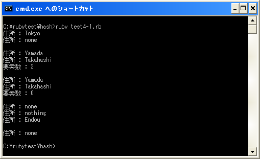

デフォルトの設定
ハッシュオブジェクトに対して存在していないキーを指定して値を取得しようとした場合、デフォルトでは「nil」が返されます。このデフォルトの値を「nil」から別の値に設定することが出来ます。
newメソッドを使う
デフォルトの値を設定する1番目の方法はHashクラスの「new」メソッドの引数にデフォルト値を設定する方法です。
hash = Hash.new([ifnone])
上記では引数「ifnone」に指定したオブジェクトがデフォルト値になります。
具体的には次のように記述します。
hash = Hash.new("none")
print(hash["Yamada"])
上記ではデフォルト値である「none」が出力されます。
この時、存在しないキーを指定して取得した値は、デフォルトで指定した同じオブジェクトが返されます。その為、デフォルト値を変更すると存在しない全てのキーに対する値に影響されます。
なお「new」メソッドにはブロック付きのものも用意されています。
Hash.new {|hash, key| ...}
この場合は、デフォルト値にはブロック内の処理が実行された結果が返されます。
具体的には次のように記述します。
hash = Hash.new{"none"}
print(hash["Yamada"])
print(hash["Takahashi"])
この場合、「hash["Yamada"]」も「hash["Takahashi"]」もデフォルト値として設定された「none」が返されますが、この2つの「none」は別のオブジェクトです。
またブロックには引数が2つ渡されます。1番目の引数にはハッシュオブジェクト、2番目の引数にはキーとして指定したオブジェクトです。引数をブロック内で使用することでキー毎に異なるデフォルト値を設定することが出来ます。
例えば次のように記述した場合、存在しないキーを指定して値を取得した時、値としてキーのオブジェクト返されます。
hash = Hash.new{|hash, key|
hash[key] = key
}
print(hash["Yamada"])
print(hash["Takahashi"])
この時、キーと値のペアが新しい要素としてハッシュに格納されます。
似ていますが次の例も見て下さい。
hash = Hash.new{|hash, key|
key
}
print(hash["Yamada"])
print(hash["Takahashi"])
この場合も存在しないキーを指定して値を取得した時、値としてキーのオブジェクトが返されますが新しい要素としては格納されません。その為再度同じ存在しないーキーを指定した場合は改めてブロック内が実行されます。
fetchメソッドを使う
デフォルトの値を設定する2番目の方法はHashクラスの「fetch」メソッドの引数にデフォルト値を設定する方法です。
ハッシュオブジェクト.fetch(key[, default])
上記では引数「default」に指定したオブジェクトがデフォルト値になります。1番目の指定したキーが存在しない場合、2番目の引数で指定したデフォルト値が返されます。
具体的には次のように記述します。
hash = Hash.new()
print(hash.fetch("Yamada", "none"))
上記ではデフォルト値である「none」が出力されます。
なお、「new」メソッドを使ってデフォルト値が設定されていた場合でも、「fetch」メソッドでデフォルト値が設定されていた場合は「fetch」メソッドで指定したデフォルト値が優先されます。
なお「fetch」メソッドにはブロック付きのものも用意されています。
fetch(key) {|key| ... }
この場合は、デフォルト値にはブロック内の処理が実行された結果が返されます。ブロックには引数としてキーのオブジェクトが渡されてきます。
具体的には次のように記述します。
hash = Hash.new()
print(hash.fetch("Yamada"){|key|key})
上記では存在しないキーを指定した場合、ブロック内の処理が実行されキーに指定したオブジェクトが値として返されます。
defaultメソッドを使う
デフォルトの値を設定する3番目の方法はHashクラスの「default」メソッドを使用する方法です。
ハッシュオブジェクト.default = デフォルト値
「default」メソッドでは現在のデフォルト値を取得すると同時に、新しいデフォルト値を設定する事も出来ます。上記ではデフォルト値を右辺に指定したオブジェクトに設定します。
具体的には次のように記述します。
hash = Hash.new() hash.default = "none" print(hash["Yamada"])
上記ではデフォルト値である「none」が出力されます。
サンプルプログラム
では簡単なプログラムで確認して見ます。
#! ruby -Ku
require "kconv"
addressh1 = Hash.new("none")
addressh1["Itou"] = "Tokyo"
print(Kconv.tosjis("住所 : "), addressh1["Itou"], "¥n")
print(Kconv.tosjis("住所 : "), addressh1["Yamada"], "¥n")
print("¥n");
addressh2 = Hash.new{|hash, key|
hash[key] = key
}
print(Kconv.tosjis("住所 : "), addressh2["Yamada"], "¥n")
print(Kconv.tosjis("住所 : "), addressh2["Takahashi"], "¥n")
print(Kconv.tosjis("要素数 : "),addressh2.length(), "¥n")
addressh3 = Hash.new{|hash, key|
key
}
print("¥n");
print(Kconv.tosjis("住所 : "), addressh3["Yamada"], "¥n")
print(Kconv.tosjis("住所 : "), addressh3["Takahashi"], "¥n")
print(Kconv.tosjis("要素数 : "),addressh3.length(), "¥n")
print("¥n");
addressh4 = Hash.new("none")
print(Kconv.tosjis("住所 : "), addressh4["Itou"], "¥n")
print(Kconv.tosjis("住所 : "), addressh4.fetch("Yamada", "nothing"), "¥n")
print(Kconv.tosjis("住所 : "), addressh4.fetch("Endou"){|key|key}, "¥n")
print("¥n");
addressh5 = Hash.new()
addressh5.default = "none"
print(Kconv.tosjis("住所 : "), addressh5["Yamada"], "¥n")
上記のプログラムを「test4-1.rb」として保存します。文字コードはUTF-8です。そして下記のように実行して下さい。

( Written by Tatsuo Ikura )

著者 / TATSUO IKURA
初心者～中級者の方を対象としたプログラミング方法や開発環境の構築の解説を行うサイトの運営を行っています。